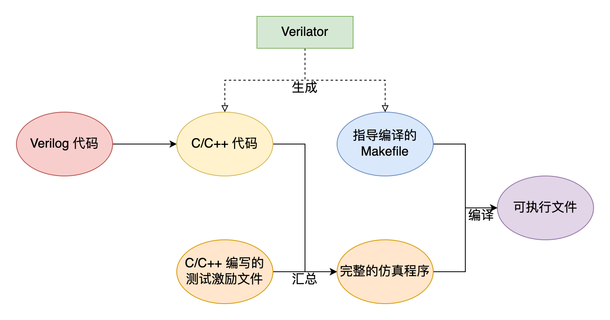

Verilator 仿真
Verilator仿真¶
重要提醒
这个是很有用的工具，本次实验不需要安装！！！
这个是很有用的工具，本次实验不需要安装！！！
这个是很有用的工具，本次实验不需要安装！！！
我们实验所需环境 iverilog + gtkwave + vivado 2023 在windows下部署即可。
实验初期计划用这个软件仿真，考虑到linux环境需求，不确定多少同学能部署，后来就放弃了。由于工具本身很有用就留在这里了
1. Verilator 环境安装¶
Verilator是一款开源的SystemVerilog模拟器和 lint 系统，能够将Verilog/SystemVerilog代码编译为高性能C++模型，帮助开发者实现快速的设计验证。无论是芯片设计新手还是资深工程师，都能通过这款工具显著提升仿真效率，降低项目成本。
使用verilator 仿真所需平台包括 wsl2 + linux + verilator + gtkwave 。实验室电脑已经部署。
需要自己安装的同学可以参考中科大的教程：
推荐的环境部署方案
- 安装 Ubuntu 22.04 LTS (实测24.04版本也可以部署)：https://soc.ustc.edu.cn/CECS/lab0/ubuntu/
- 安装 Verilator：https://soc.ustc.edu.cn/CECS/lab0/verilator/
- 安装辅助工具：https://soc.ustc.edu.cn/CECS/lab0/install/
另一种可选的方案是 msys2+verilator方案
msys2+verilator：https://blog.csdn.net/m0_68734047/article/details/161755417
3 Verilator 的工作原理¶
Verilator 的工作原理如下图所示：

Verilator 的主要功能就是将 Verilog 代码转化为 SystemC 或 C++ 代码。以处理器的仿真为例：
-
首先，Verilator 将 Verilog 代码中并行的各个逻辑部件以合适的顺序串行化，使硬件设计转化为一个类似于处理器模拟器的软件；
-
接着，我们需要使用 C/C++ 编写激励文件。Verilator 为我们提供了顶层模块输入/输出引脚的接口，使我们得以对顶层模块的输入信号赋值或读取其输出信号。与使用 Vivado 仿真不同的是，我们可以实时地输出一些调试信息；要查看波形图时，需要将波形图导出到文件；
-
最后，Verilator 会生成一个 Makefile 脚本，利用 GCC 等编译器将生成的 C/C++ 文件和我们编写的激励文件编译成成用于仿真的可执行文件。
3. Verilator 仿真¶
以实验2的mux8设计为例。
仿真环境共有3个文件。
- 待测的System verilog文件
module mux8(
input [7 : 0] D,
input [2 : 0] sel,
output Y
);
- C/C++ 编写的激励文件
代码提供了一个激励文件模板。
这里的需要测试的文件为mux8.sv，顶层模块为mux8，激励文件中有对应名称为Vmux8，文件有3处对应部分。
#include "Vmux8.h" // Verilator生成的模型头文件这里对应mux8.sv的模块名
...
static Vmux8* top; // 修改2 对应mux8.sv的模块名
...
top = new Vmux8; //修改3 对应mux8.sv的模块名
- 仿真初始化 ：sim_init();
- 执行并生成波形：step_and_dump_wave();
- 仿真结束并退出：sim_exit();
main()函数为主体的仿真代码，根据待测文件进行更改。
仿真接入待测文件的方法示例：
top->D = 0;
top->sel = 0;
step_and_dump_wave();
通过“top->(信号名)”可以访问verilog的引脚。改变输入信号的值，观察输出信号的状态。
- Makefile
这个文件可以快捷的执行仿真命令。
$(VERILATOR) -cc \
--trace \
--exe \
--build \
-j \
$(SV_INC_FLAGS) \
$(TOP_MODULE) \
sim_mux8.cpp
@echo "-- RUN ---------------------"
obj_dir/Vmux8
有Makefile文件，我们在当前目录下执行“ make ” 就会执行如下命令。
verilator -cc --trace --exe --build -j sim_mux8.cpp
./obj/Vmux8
./obj/Vmux8 执行Vmux8会输出仿真结果。
这个Makefile模板只需要修改相应的cpp文件名(sim_mux8.cpp)和生成的仿真程序名(Vmux8)。